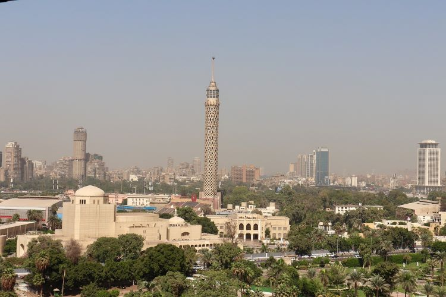
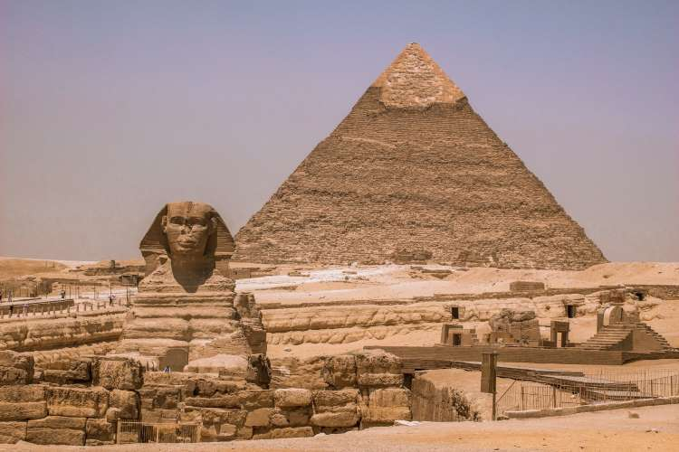
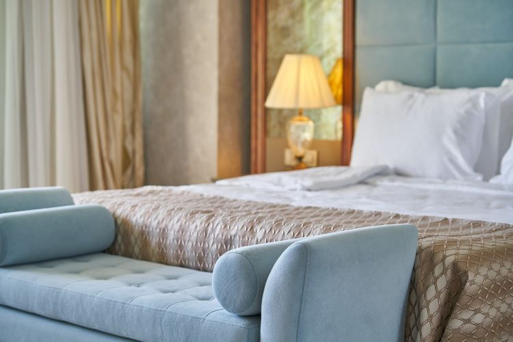
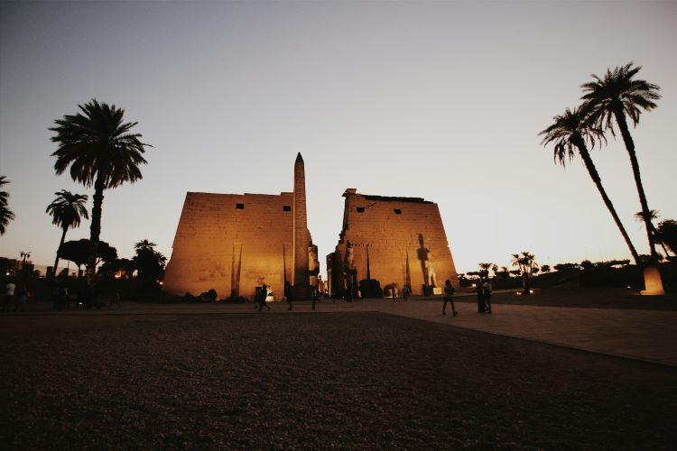
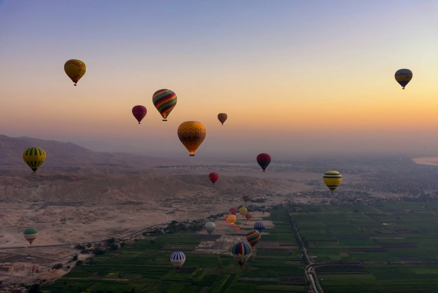
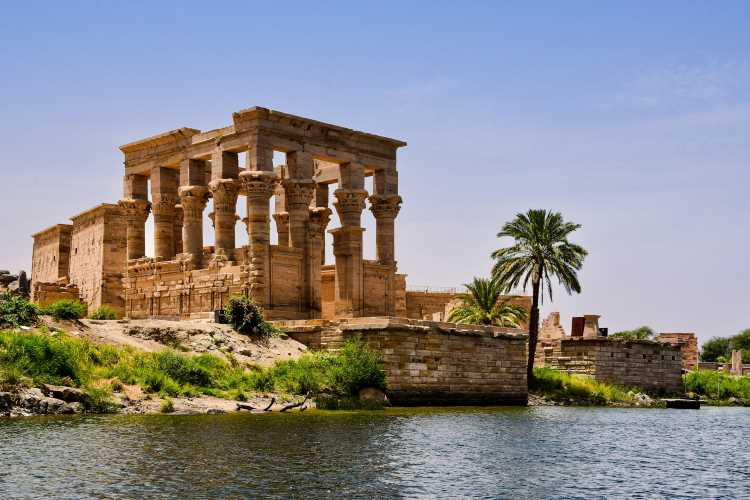

観光名所
＋1-818-208-3009（料金有料）
ここがおすすめ！エジプトの見どころ
歴史を紐解けば紀元前3千年にまでもさかのぼることができるという、古代より国家が形成された歴史ロマンの国です。
学生のころに世界史の教科書にでてきたキーワードの数々を
実際に訪ねていくことができるため、非常に人気の高い旅先です。ラグジュアリーなホテルも多いので、ゆったりと旅を楽しめるでしょう。
カイロの見どころ
エジプトの首都で、アラブ世界の中心都市です。地下鉄や高層ビルもありとても近代的な新市街、モスクや世界最古の大学がある旧市街のほか、古代文明の名残が今も見られるオールド・カイロとさまざまな顔を持っていて、見どころには事欠きません。ギザのピラミッドへの玄関口であり拠点でもあります。
乗り入れ航空会社
エジプト航空、エールフランス航空、ルフトハンザ ドイツ航空、アリタリア-イタリア航空 、ブリティッシュエアウェイズ、ターキッシュエアラインズ、エミレーツ航空
主な国際空港
カイロ国際空港
市内への所要時間
車で約25分
-

マリオット・メナハウス・カイロ
カイロには多くの素敵なホテルがありますが、エジプトらしい体験ができるのがこの『マリオット・メナハウス』。なんとギザのピラミッドまで歩いて行ける距離にあり、室内からもピラミッドが見える部屋があります。敷地内からは夜間にライトアップされる古代建築物の姿が見られ、大変ユニークな体験となるでしょう。室内の装飾も重厚な雰囲気で、かつエグゼクティブルームを選べばクラブラウンジの利用も可能です。エジプト博物館やスフィンクスなど、ほかの観光名所へも近いので、旅の拠点としてもおすすめです。
-

ギザのピラミッド
エジプトといえばピラミッド！ 市街からわずか30分ほどで行ける世界遺産ギザにはクフ王、カウラ―王、メンカウラー王の3つのファラオ（王）の墓と、それらを守るようにスフィンクスが鎮座しており、大変人気の観光スポットとなっています。建設は紀元前2560年と推定され、その当時の技術でこれだけの巨大かつ完璧な建造物が造られたことから“世界七不思議”のひとつにも数えられています。クフ王のピラミッドのみ、内部を見学することができますが、午前中と午後とでそれぞれ人数制限があるので注意しましょう。
-

考古学博物館
これだけ古代文明が集中しているエジプトでは、世界中から考古学者がやってきて出土品や遺跡を研究し続けています。そうした品々を展示し、また解説が見られるのが博物館。展示品の数はざっと20万点にものぼり、中には紀元前14世紀のファラオ、ツタンカーメンの黄金のマスクや13世紀のファラオ、ラムセス二世のミイラなど有名なものも実物を見ることができます。ミイラは空調などの管理がしっかりされてりミイラ室に展示されているため、入場料とは別に入室料がかかります。また、博物館は全体的に写真撮影は許可が必要で有料ですの勝手に撮影しないよう気を付けましょう。 ※エジプト考古学博物館の展示物は、順次2021年オープン予定の大エジプト博物館（GEM）に移管されます。又、ミイラ室のミイラも一部文明博物館に移管される予定です。
ルクソールの見どころ
世界遺産にも認定されている古代都市テーベのあった場所で、広範囲にわたり遺跡が残っており現代においては観光都市となっています。街の中心にはナイル川が流れ、太陽が昇る方向の東岸には神殿など「生」を象徴するもの、太陽が沈む西岸は墓など「死」を意味する施設が建設されました。過去には日本からも直行便が就航していたことがあるほど、人気かつ定番の旅先です。
乗り入れ航空会社
エジプト航空、ターキッシュエアラインズ、エミレーツ航空
主な国際空港
ルクソール国際空港
市内への所要時間
-

アル・マウディラ
写真家にしてジュエリーデザイナーでもあるというオーナーが夢に描いたホテルを実現したというだけあって、どこを見てもファンタジーにあふれています。54室の客室内はそれぞれ違ったデザインで、ある部屋は砂漠の蜃気楼のよう、ある部屋はアラブの宮殿のよう、といったように趣が異なります。敷地内には8ヘクタールもの広大なガーデンがあり、のんびりと散歩するのもおすすめ。また、ナイル川の西岸側にあり、『王家の谷』までは4㎞の距離。観光にも便利でしょう。
-

ルクソール神殿
ナイル川の東岸、太陽の昇る場所＝“生”を象徴する建築物として建設された神殿です。紀元前16世紀に建設が始まったとされ、時代ごとのファラオによって増築が繰り返されてきたため複合的な神殿の集合体となっています。数世紀にわたってがれきとして埋もれていましたが、1884年に発掘が開始され、元の姿に復元されました。広大なエリアにわたって神殿や巨大な像、ヒエログリフが刻み込まれた石柱などが点在しており、見どころはもりだくさん。歩きやすい靴で時間をかけてじっくりめぐりましょう。
-

王家の谷
ルクソールの西岸側は「陽の落ちる場所」、すなわち“死”を意味しそれを象徴するものが置かれました。これまでに64の墓が発見されている岩窟墓群で、そのうちファラオ（王）の墓が24か所あるためこのような名前がついています。若くして亡くなったツタンカーメンの墓もこの場所で見つかっており、1922年の発見時まで奇跡的に盗掘を逃れていたため多くの副葬品や財宝が見つかり研究に大きな貢献をしました。ちなみに、同じ西岸には「王妃の谷」もあり、こちらはその名の通りファラオの妻たちが葬られています。
アスワンの見どころ
エジプト南部にある都市で、古代から貿易の地として栄えた古都です。スーダンとの国境付近にあるアブ・シンベル神殿への玄関口であり拠点として知られるほか、エジプトの国を挙げた治水事業であるアスワン・ハイ・ダムにも近く、これも観光名所となっています。雨がほとんど降らない街で、夏場は特に気温も高いので、旅の間は水分をしっかりとるよう心がけましょう。
乗り入れ航空会社
エジプト航空
主な国際空港
アスワン国際空港
市内への所要時間
車で約30分
-
ソフィテル・レジェンド・オールド・カタラクト・アスワン
大富豪の娘が新婚旅行中、何者かに殺害される——ミステリー作家アガサ・クリスティの人気作のひとつ『ナイルに死す』の舞台となったことで知られるホテルで、クリスティは実際にこのホテルに滞在して本作を書き上げました。作中で描かれたとおり、ナイル川を見下ろす岬にそびえるピンク色の花こう岩の建築が印象的。エレファンティネ島を望む景色も美しく、まさにリゾートといった趣です。1899年に建設され、これまでにウィンストン・チャーチル元英国首相やダイアナ元妃など著名人を迎えた名門として知られています。
-
アブ・シンベル宮殿
ラムセス2世が紀元前12世紀に建設した神殿で、『アブ・シンベルからフィラエまでのヌビア遺跡群』として世界遺産に登録されています。数ある神殿の中でも特にこの神殿が有名なのは、アスワン・ハイ・ダムの建設に関係があります。今でこそダムのそばに位置していますが、当初の計画ではこの神殿はダムの底に沈む予定でした。ユネスコの働きかけにより国際的な協力のもと、神殿は高所に移築されることとなったのです。このことがきっかけで文化的・自然的に守るべき人類の遺産「世界遺産」が創設されました。大小の荘厳な神殿はラムセス2世の巨像やヒエログリフの書き込まれた石柱などが見られ、圧巻です。
-

アスワン・ハイダム
「エジプトはナイルのたまもの」と言われるとおり、エジプトは古代よりナイル川の恩恵を受けてきました。近代になると度重なる氾濫による被害をコントロールする必要が出てきたため、ダムを建設。しかしさらに規模の大きなダムが必要となり、アスワン・ハイ・ダムの建設が計画されました。ダム建設に際しさまざまな問題が引き起こされましたが、無事に完成するとエジプトに恩恵をもたらすようになります。完成時には記念塔が建設され、見学施設が完成。人工のダム湖で全長500㎞にも及ぶ広大なナセル湖も一望することができます。